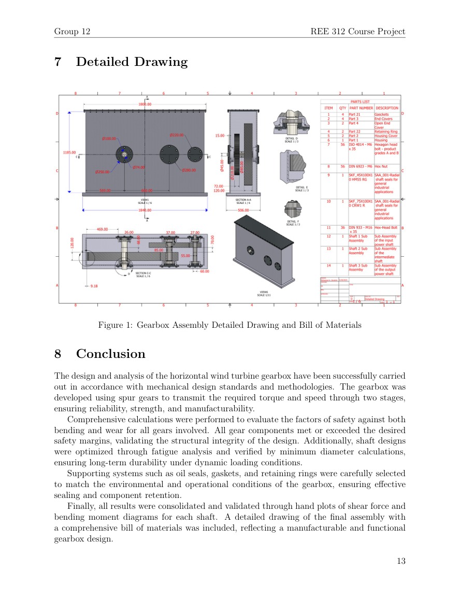
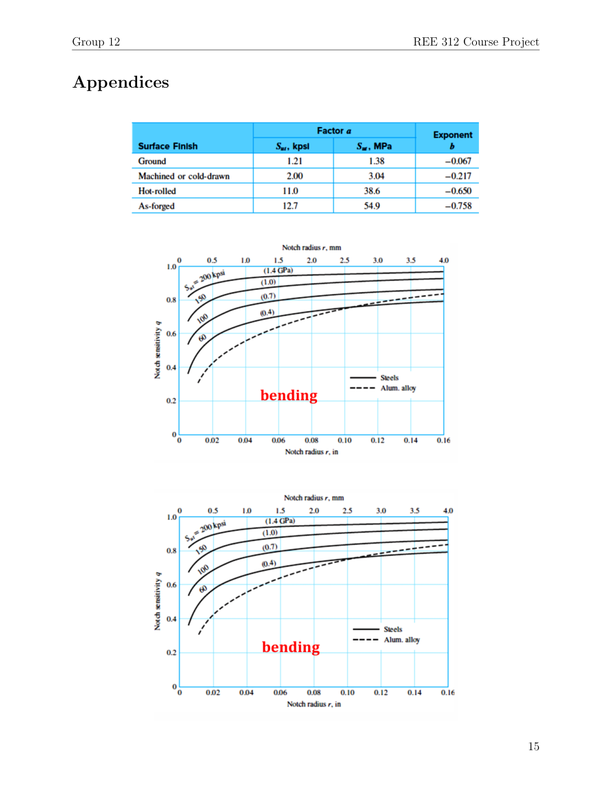
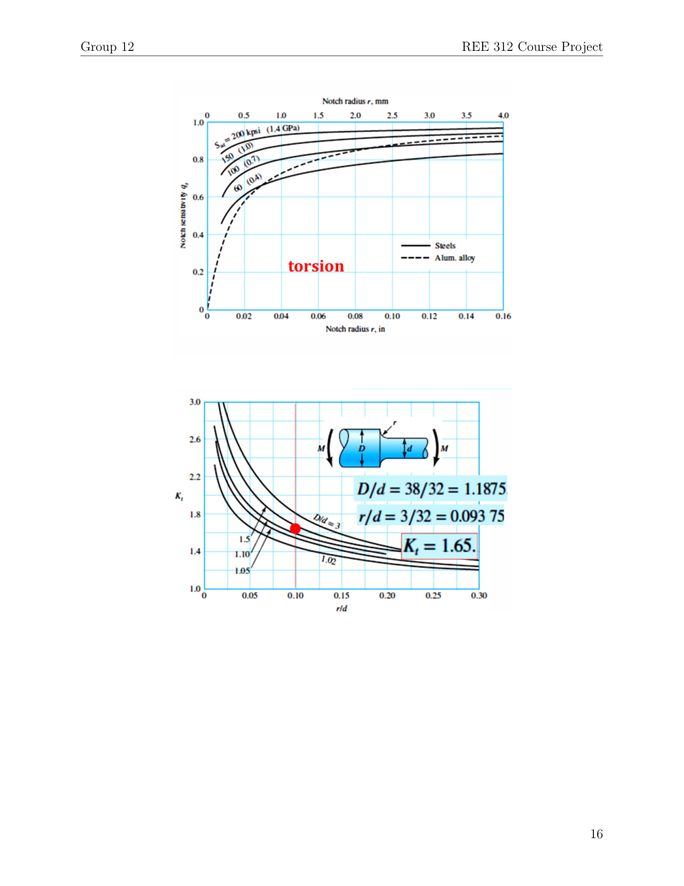
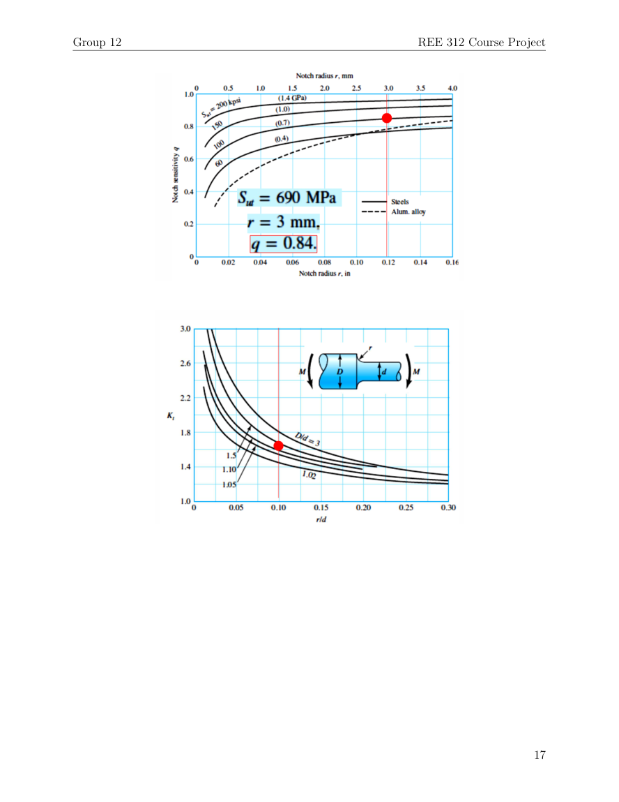
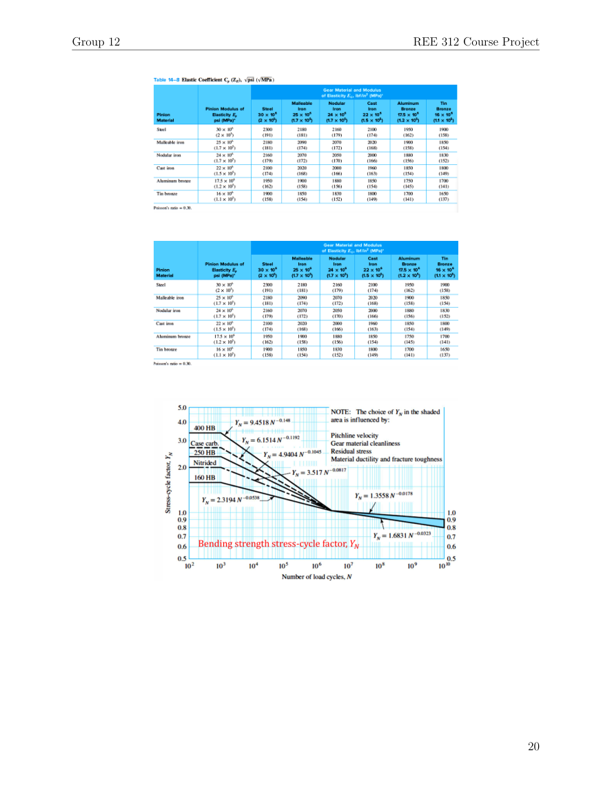

Project overview
This academic team project designed a gearbox to transmit power between the low-speed rotor and higher-speed generator of a 55 kW horizontal-axis wind turbine. The report develops gear forces and torque-speed relationships, evaluates tooth bending and contact stresses, sizes three shafts, and specifies keys, rolling bearings, seals and retaining rings.
Gear-train design
The report analyzes two meshing stages using spur-gear calculations and AGMA bending and contact safety factors. Its listed rotational speeds are approximately 95 rpm at the first gear and 1500 rpm at the output gear. These figures are report values rather than independently tested measurements.
Shafts and fatigue
Rotating shafts are sized using bending and torsion analysis and a modified Goodman fatigue approach. The documented selected shaft diameters are 80 mm, 75 mm and 50 mm, respectively, for the three analyzed shafts.
Bearings and retention hardware
The design includes deep-groove ball bearings sized using load and life calculations, along with key sizing, oil-seal choices and retaining-ring selection. The report includes Autodesk Inventor drawings and assembly images for the modeled gearbox.
Technical interpretation
The abstract describes a helical gearbox whereas the body develops spur-gear geometry and AGMA calculations. This page follows the detailed spur-gear analysis, without treating the conflicting terminology as resolved.
Report figures and CAD documentation
Selected original illustrations and engineering results from the submitted report. Click a figure for its full-resolution image.











Technical report
View the original project report (PDF) ↗